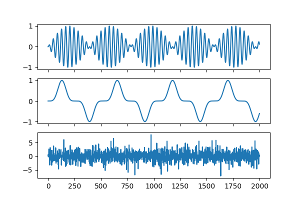
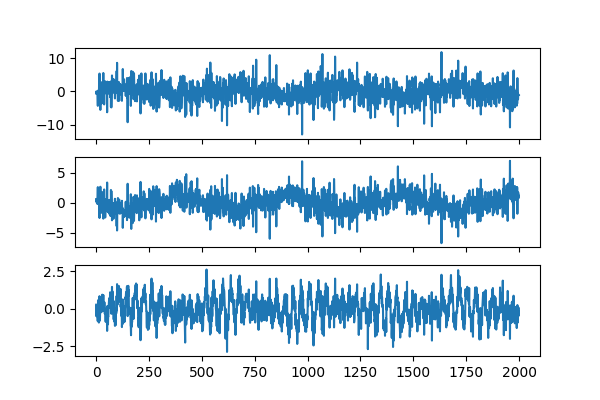
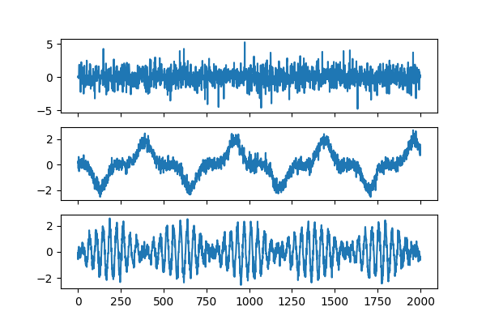
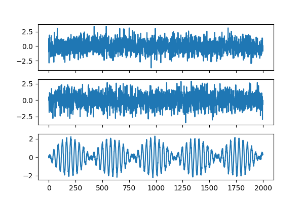

Note
Click here to download the full example code
ICA: a tutorial¶
Author: Pierre Ablin
Group ICA extends the celebrated Independent Component Analysis to multiple datasets.
Single view ICA decomposes a dataset \(X\) as \(X = S \times A^{\top}\), where \(S\) are the independent sources (meaning that the columns of \(S\) are independent), and \(A\) is the mixing matrix.
In group ICA, we have several views \(Xs = [X_1, \dots, X_n]\). Each view is obtained as
so the views share the same sources \(S\), but have different mixing matrices \(A_i\). It is a powerful tool for group inference, as it allows to extract signals that are comon across views.
# License: MIT
import numpy as np
import matplotlib.pyplot as plt
from mvlearn.decomposition import GroupICA
Define a Function to Plot Sources¶
def plot_sources(S):
n_samples, n_sources = S.shape
fig, axes = plt.subplots(n_sources, 1, figsize=(6, 4), sharex=True)
for ax, sig in zip(axes, S.T):
ax.plot(sig)
Define Independent Sources and Generate Noisy Observations¶
Define indepdent sources. Next, generate some views, which are noisy observations of linear transforms of these sources.
np.random.seed(0)
n_samples = 2000
time = np.linspace(0, 8, n_samples)
s1 = np.sin(2 * time) * np.sin(40 * time)
s2 = np.sin(3 * time) ** 5
s3 = np.random.laplace(size=s1.shape)
S = np.c_[s1, s2, s3]
plot_sources(S)
n_views = 10
mixings = [np.random.randn(3, 3) for _ in range(n_views)]
Xs = [np.dot(S, A.T) + 0.3 * np.random.randn(n_samples, 3) for A in mixings]
# We can visualize one dataset: it looks quite messy.
plot_sources(Xs[0])
- 
- 
Apply Group ICA¶
Next, we can apply group ICA. The option multiview_output=False means that we want to recover the estimated sources when we do .transform. Here, we look at what the algorithm estimates as the sources from the multiview data.
groupica = GroupICA(multiview_output=False).fit(Xs)
estimated_sources = groupica.transform(Xs)
plot_sources(estimated_sources)
Inspect Estimated Mixings¶
We see they look pretty good! We can also wheck that it has correctly predicted each mixing matrix. The estimated mixing matrices are stored in the .individual_mixing_ attribute.
If \(\tilde{A}\) is the estimated mixing matrix and \(A\) is the true mixing matrix, we can look at \(\tilde{A}^{-1}A\). It should be close to a scale and permuation matrix: in this case, the sources are correctly estimated, up to scale and permutation.
Out:
<matplotlib.image.AxesImage object at 0x7fd9756d8690>
Group ICA on Only 2 Views¶
A great advantage of groupICA is that it leverages the multiple views to reduce noise. For instance, if only had two views, we would have obtained the following.
estimated_sources = groupica.fit_transform(Xs[:2])
plot_sources(estimated_sources)
# Another important property of group ICA is that it can recover signals that
# are common to all datasets, and separate these signals from the rest.
# Imagine that we only have one common source across datasets:
common_source = S[:, 0]
mixings = np.random.randn(n_views, 3)
Xs = [a * common_source[:, None] + 0.3 * np.random.randn(n_samples, 3)
for a in mixings]
estimated_sources = groupica.fit_transform(Xs)
plot_sources(estimated_sources)
# It recovers the common source on one channel, and the other estimated
# sources are noise.
- 
- 
Total running time of the script: ( 0 minutes 1.030 seconds)